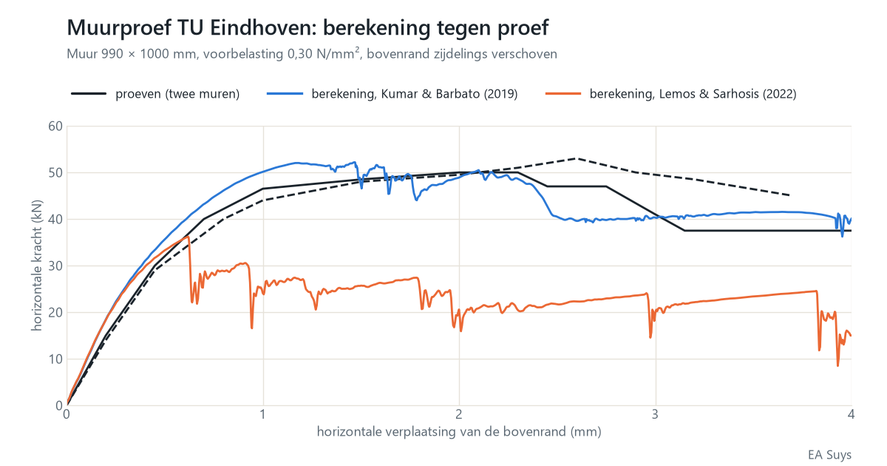

Hoeveel kan een oude bakstenen muur nog hebben? Steen voor steen doorgerekend
Een nieuwe opening in een dragende muur, scheuren na een zetting, een oude muur die door een verbouwing anders belast wordt: bij bestaande gebouwen komt telkens dezelfde vraag terug. Voor de gewone gevallen volstaan de regels van Eurocode 6. Voor de uitzonderlijke gevallen rekenen we de muur door zoals hij gebouwd is: steen voor steen, voeg voor voeg.
Steen voor steen
In ons rekenmodel is elke steen een blok dat vervormt, en elke voeg een naad die kan opengaan, glijden of verbrijzelen. Elke voeg krijgt een treksterkte, een cohesie, een wrijvingshoek en een breukenergie: hoeveel energie het kost voor de voeg helemaal gescheurd is. Ook dwars door de stenen kan een scheur lopen.
Het scheurpatroon volgt zo vanzelf uit de berekening. We zien niet alleen hoeveel de muur kan dragen, maar ook hoe hij bezwijkt: waar de scheuren beginnen, hoe ze verder lopen en wat er na de eerste scheur nog overblijft.
De toets: een muurproef van de TU Eindhoven
Een rekenmodel moet zich eerst bewijzen. Aan de Technische Universiteit Eindhoven zijn bakstenen muren van ongeveer 1 bij 1 meter beproefd (Vermeltfoort & Raijmakers, 1993). Elke muur werd eerst samengedrukt met 0,30 N/mm². Daarna werd de bovenrand zijdelings verschoven, terwijl hij op dezelfde hoogte bleef. Die proeven zijn een klassieke toetssteen voor rekenmodellen van metselwerk.
Met de materiaalgegevens die voor deze muren gepubliceerd zijn (Kumar & Barbato, 2019) vinden we:
- Maximale horizontale kracht: 52 kN in de berekening, 50 en 53 kN in de twee proeven.
- Na het maximum: de kracht zakt in de berekening tot ongeveer 40 kN bij 4 mm verplaatsing. De twee proeven eindigen tussen 37 en 45 kN.
- Hoe de muur bezwijkt: een getrapte diagonale scheur door de voegen en verbrijzeling in de hoeken, zoals in de proeven.
- Stabiel resultaat: drie berekeningen met een kleine willekeurige spreiding op de sterkte van de voegen geven dezelfde maximale kracht, op minder dan 1 % na.


De materiaalgegevens maken het verschil
Voor dezelfde muren is ook een tweede set materiaalgegevens gepubliceerd (Lemos & Sarhosis, 2022), met een lagere treksterkte en cohesie van de voegen. Met die gegevens geeft hetzelfde model ongeveer 36 kN: 30 % minder dan de proeven. Ook het gedrag na het maximum hangt af van een aanname, namelijk hoe het metselwerk in de hoeken verbrijzelt.
Het rekenmodel is dus maar zo betrouwbaar als de gegevens over de mortel en de steen. Voor een bestaand gebouw rekenen we daarom met een onder- en een bovengrens, of laten we proeven op de mortel en de stenen uitvoeren waar het antwoord ervan afhangt.
Wat betekent dit voor uw project?
- Een nieuwe opening in een dragende muur: kan de rest van de muur de belasting en de windkrachten nog opnemen?
- Scheuren in metselwerk: welke beweging verklaart het scheurpatroon? Samen met satellietmetingen van de bodembeweging zien we of die beweging nog actief is.
- Erfgoed en herbestemming: oude muren die door een nieuwe functie anders belast worden.
Voor de gewone gevallen rekenen we volgens Eurocode 6. Dit model zetten we in waar die regels tekortschieten. Vragen over een concreet gebouw? Mail naar info@easuys.be.
Bronnen
- Vermeltfoort, A.T. & Raijmakers, T.M.J. (1993). Deformation controlled tests in masonry shear walls, deel 1 en 2. Technische Universiteit Eindhoven.
- Kumar, N. & Barbato, M. (2019). New constitutive model for interface elements in finite-element modeling of masonry. Journal of Engineering Mechanics 145(5). doi:10.1061/(ASCE)EM.1943-7889.0001592
- Lemos, J.V. & Sarhosis, V. (2022). Discrete element bonded-block models for detailed analysis of masonry. Infrastructures 7(3), 31. doi:10.3390/infrastructures7030031
- Rainone, Tateo, Casolo & Uva (2023). About the use of concrete damage plasticity for modeling masonry post-elastic behavior. Buildings 13(8), 1915 (CC BY 4.0). doi:10.3390/buildings13081915